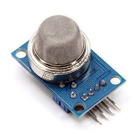

The MQ series of gas sensors utilizes a small heater inside with an electro chemical sensor these sensors are sensitive to a range of gasses are used at room temperature. MQ135 alcohol sensor is a Sno2 with a lower conductivity of clean air. When the target explosive gas exists, then the sensor’s conductivity increases more increasing more along with the gas concentration rising levels. By using simple electronic circuits, it convert the charge of conductivity to correspond output signal of gas concentration The MQ135 gas sensor has high sensitivity in ammonia, sulfide, benze steam, smoke and in other harm full gas. It is low cost and suitable for different applications. There are different types of alcohol sensors like MQ-2, MQ-3, MQ-4, MQ-5, MQ-6, etc.
